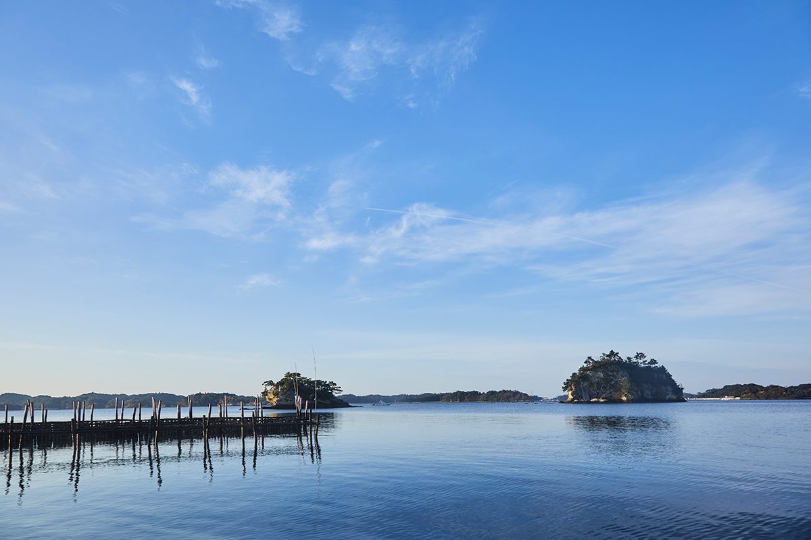
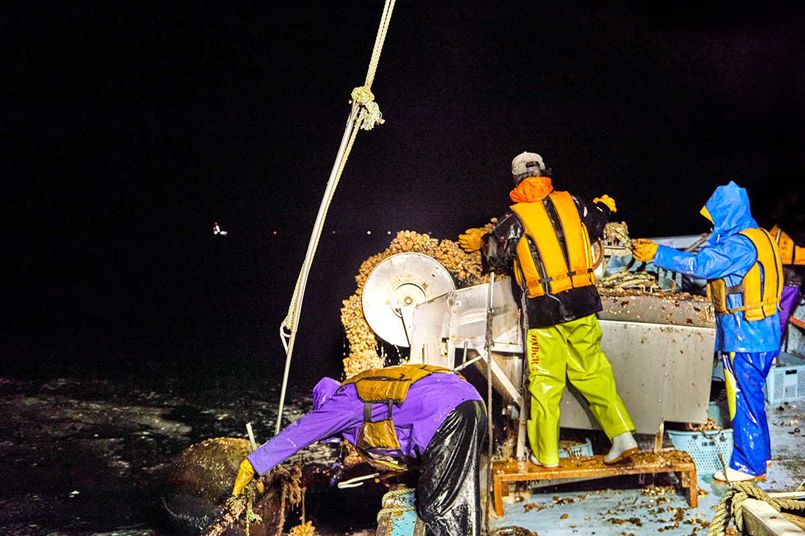
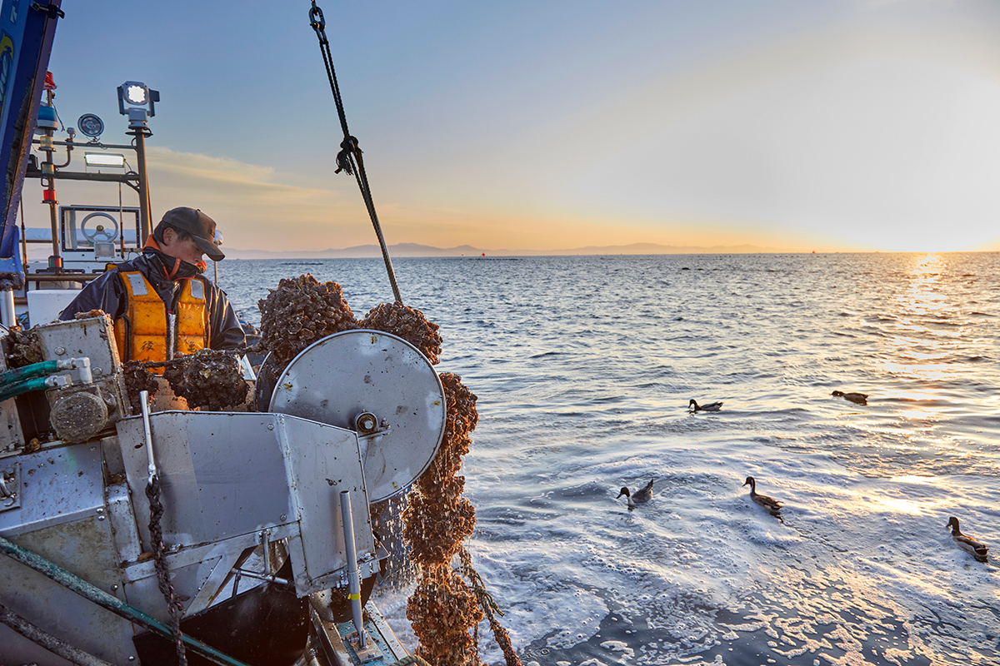
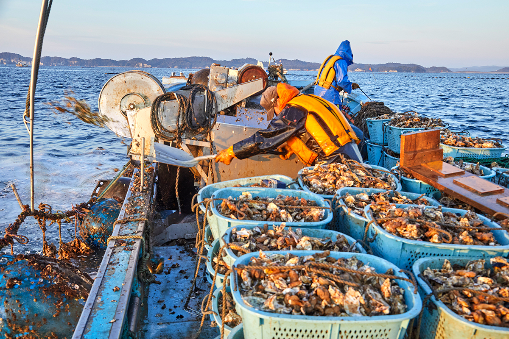
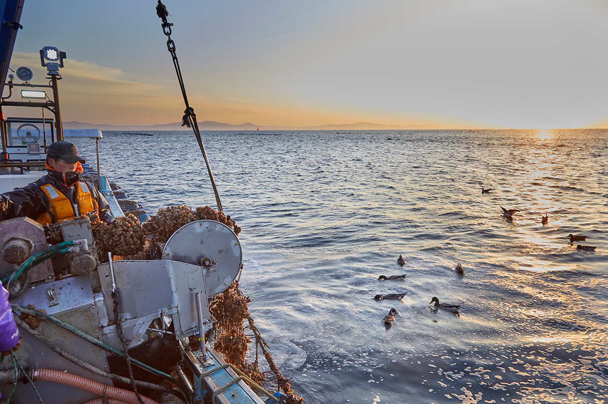
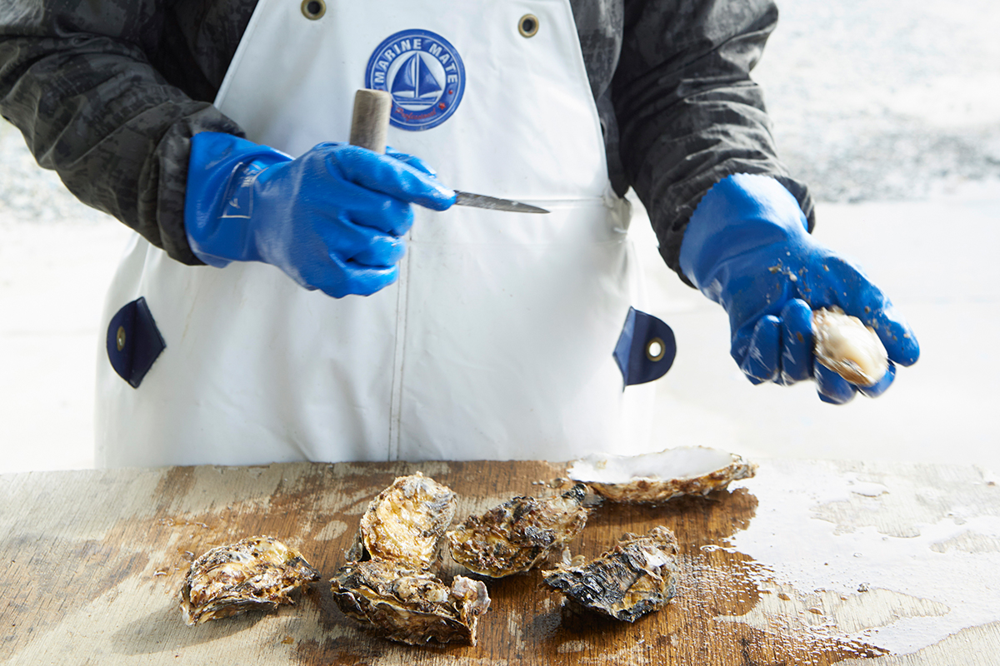
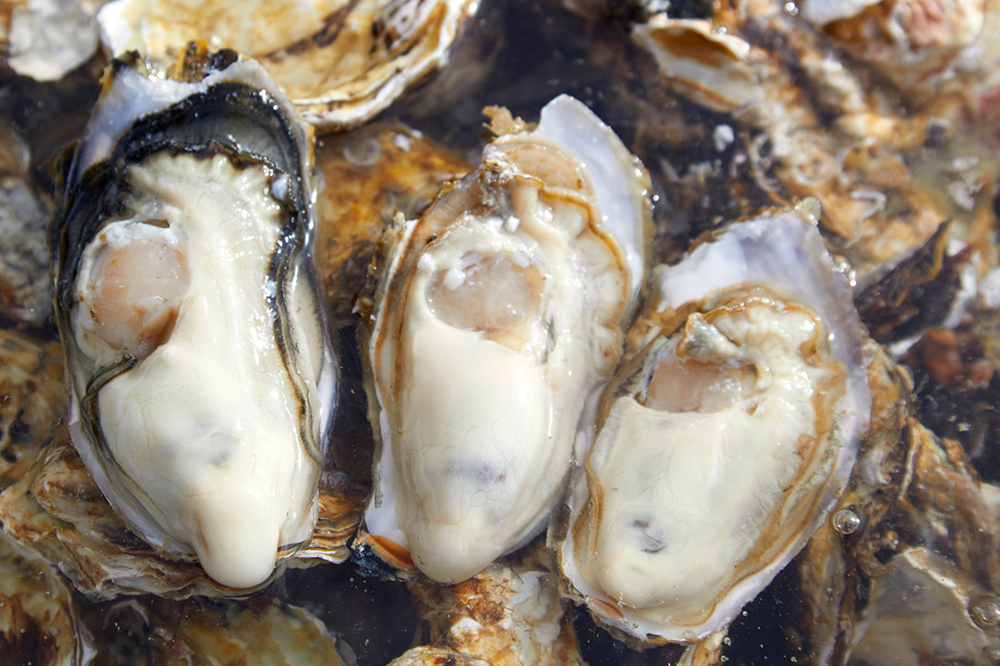
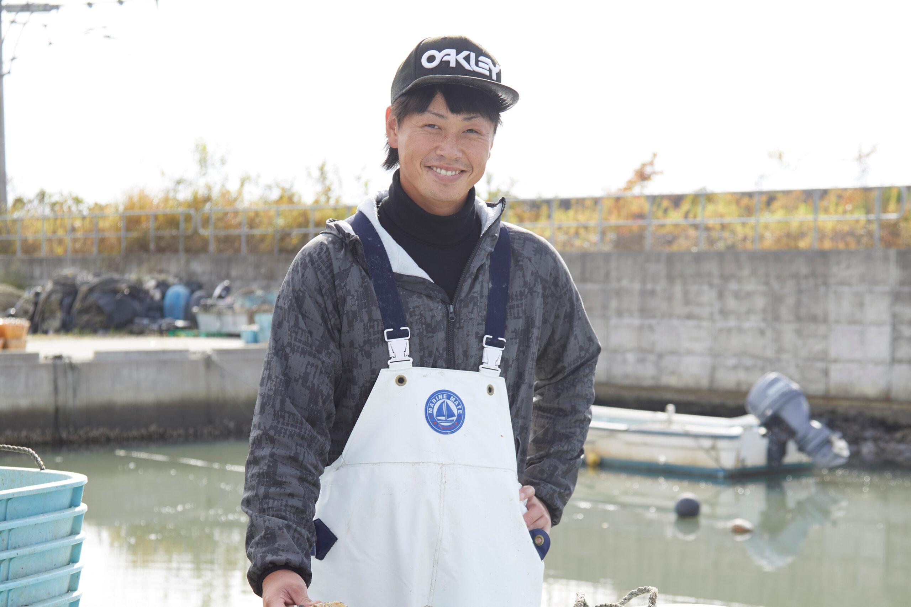
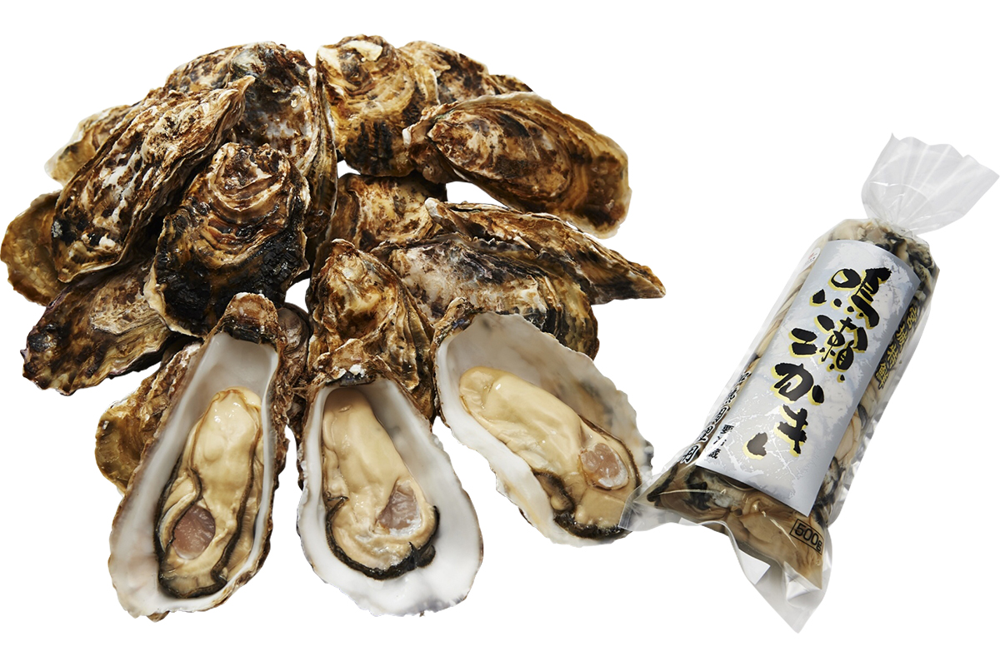

Префектура Мияги · Хигаси-Мацусима · устрицы
Устрицы Нарусэ: ночной промысел хозяйства «Гото суйсан» в Хигаси-Мацусиме

Устрицы одного вида на разных берегах Санрику различаются по вкусу. Среди них особенно выделяются устрицы из Нарусэ в городе Хигаси-Мацусима, и в семейном хозяйстве «Гото суйсан» объясняют почему.
Море
Вкус, который зависит от берега
У знатоков устриц есть правило: вкус зависит от моря, в котором они выросли. Обычная японская гигантская устрица созревает с зимы до весны, и даже у одного вида на каждом берегу свой вкус. Автор, писатель и кулинар, убедился в этом лет десять назад, когда объезжал побережье Санрику и пробовал устриц с разных ферм. Соль, насыщенность, жирность и горечь везде сочетались по-разному. Покупая в супермаркете устриц с пометкой «из Мияги», такой разницы не заметишь.
Сильнее всего ему запомнились устрицы из района Нарусэ в городе Хигаси-Мацусима. Нарусэ это старое название местности, оно происходит от реки Нарусэ, которая здесь впадает в море. Хороши были устрицы и на других берегах, но эти выделялись. Чтобы понять, в чём их секрет, автор отправился в Нарусэ, в семейное хозяйство «Гото суйсан», которое само ведёт весь цикл, от сбора спата до урожая.
Хигаси-Мацусима лежит у Мацусимы, одного из трёх самых знаменитых видов Японии и особо охраняемого живописного места. Город называют «танэба», местом семян: отсюда по стране отправляют спат, молодь устриц. Время сбора рыбаки определяют, разглядывая личинок в микроскоп.
Промысел
Выход в море в три часа ночи
Работа начинается в три часа ночи, задолго до рассвета. В 3:30 лодка уходит в открытое море. Ветру здесь ничто не мешает, и зимой холод пробирает до костей.
«Бывает, что и нам самим не хочется выходить»
Коити Гото, «Гото суйсан»

В Японии устриц выращивают двумя основными способами. При плотовом гирлянды с устрицами подвешивают к плотам на поверхности воды, так делают в спокойных заливах, например в префектуре Хиросима. При ярусном на воде держатся поплавки-бочки, между ними натянуты канаты, а на канатах висят устрицы. Такая конструкция прочнее, поэтому её ставят у входа в залив и в открытом море, где сильны ветер и течения. В Мияги в основном выращивают именно так.
Канаты с устрицами поднимают лебёдкой. Мойка смывает ил, и устриц ссыпают в корзины. Когда палуба заполнена корзинами, промысел окончен. Но по ходу работы рыбаки перегибаются через борт и снова привязывают часть поднятых канатов.
«Длина каната 12 метров. Чем ближе к поверхности, тем больше солнца, а значит, и планктона, то есть корма. На глубине его меньше. Поэтому верхнюю часть мы собираем, канат перевязываем, а нижнюю снимаем через месяц»
Коити Гото


Метод
Устрицы, которых закаляет течение
Работать с качающейся лодки, свесившись над водой, тяжело, но рыбаки справляются легко. До урожая устрица проходит несколько этапов. Сначала собирают спат, личинок, и дают им осесть на раковинах гребешка. Затем молодь выдерживают на мелководных стеллажах, на солнце и воздухе. Такая закалка даёт сильных, жизнеспособных устриц. Обычно после этого их опускают в море на основное выращивание, но в Нарусэ есть ещё один этап.
«Море в Нарусэ это место, где заканчиваются реки Нарусэ и Ёсида. С гор Оу приходит много питательных солей, но одного этого для такого вкуса мало. После закалки мы делаем „окидаси“: переносим устриц во внешний залив, где течение быстрое. На это уходит два месяца. Окидаси делают в нескольких местах страны, но переносить устриц из внутреннего залива в бурные воды, куда впадают реки, по-моему, умеют только в Нарусэ»
Коити Гото
В бурной воде мясо устрицы становится плотным и при этом набирает питательные вещества и наливается белым.

Берег
От лодки до покупателя без посредников
Светает, а работа всё идёт. Гото время от времени спрашивает, не замёрзли ли гости, но рук не останавливает. К концу палуба заставлена корзинами с устрицами, и это, по его словам, ещё небольшой улов. На обратном пути солнце освещает рябь, и море блестит, будто только что родилось.
«Этот вид каждый раз радует»
Коити Гото
Море здесь суровое и в то же время красивое. Оно приносит беды, такие как цунами, но и даёт очень многое.
На берегу с устриц снимают наросты, например белых асцидий, и на 24 часа помещают их в стерилизованную морскую воду. Потом устриц вскрывают одну за другой, и за этой работой приятно наблюдать. Очищенных устриц отправляют на проверку. Нормы Мияги известны своей строгостью: устрицы, которые им соответствуют, идут для еды в сыром виде, остальные для приготовления, и их фасуют по пакетам. Улов, переработка и отправка проходят в одних руках.

При обычной продаже улов идёт на аукцион, его покупают оптовики, затем посредники, и только потом устрицы попадают в магазин. Если покупать у «Гото суйсан» напрямую, устриц можно попробовать без этой задержки, в лучшем виде.
Только что вскрытая устрица сначала отдаёт солёной водой, а когда её надкусишь, во рту разливается мягкая сладость.

«Сладкие, правда? Отсутствие терпкости это черта годовалых устриц. Так, как мы выращиваем, стали делать при отце. Например, малышей-устриц зажимают в канате, это называется „хасамидзуна“, и если зажать плохую устрицу, хорошей она не вырастет, поэтому выбор очень важен. В итоге важен не размер раковины, а наполненность. Главное, по-моему, сколько в раковине белого мяса»
Коити Гото
Хозяин
Третье поколение

Коити Гото представляет третье поколение семьи и работает под началом отца, второго в роду. Ещё в юности он решил продолжить семейное дело и в университете, на отделении биологического производства, изучал двустворчатых моллюсков. Но на втором курсе, в 2011 году, случилось Великое восточнояпонское землетрясение. О разведении устриц нельзя было и думать, и Гото уехал в Токио, где работал торговым представителем в медицинской сфере. Через три года, когда восстановление продвинулось, отец позвал его домой.
«Я согласился сразу. Вернулся и занялся этим делом»
Коити Гото
На вопрос автора, тяжело ли это, Гото рассмеялся.
«Конечно, тяжело. Но когда устрицы удались и покупатели присылают письма со словами благодарности, бросить уже невозможно»
Коити Гото
Вкус устриц меняется от берега к берегу. Но это верно лишь наполовину: вкус устриц создают люди, и их увлечённость согревает тех, кто ест.

У «Гото суйсан» есть онлайн-магазин и магазин при хозяйстве, который работает только по предварительной записи.
«Гото суйсан»
- Адрес
- префектура Мияги, Хигаси-Мацусима, Оцука, Оцука, 104-1
- Телефон
- +81 80-1671-4233 (звонки пн–пт 16:00–18:00)
- Часы работы
- 9:00–15:00 (магазин при хозяйстве, по записи)
- Выходные
- суббота, воскресенье
- Сайт
- gotosuisan.jp
Фото: Кэнта Ёсидзава.